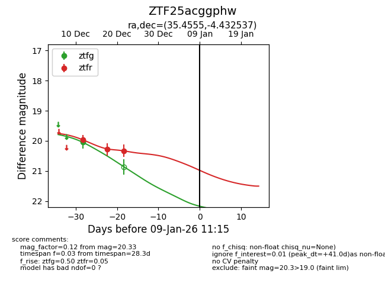
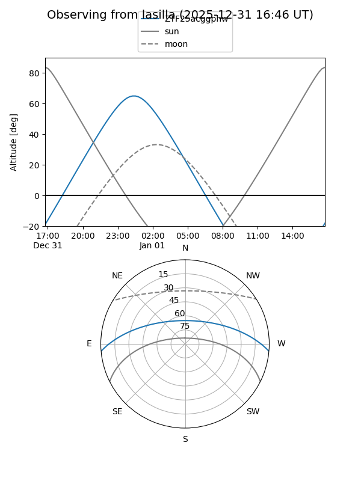
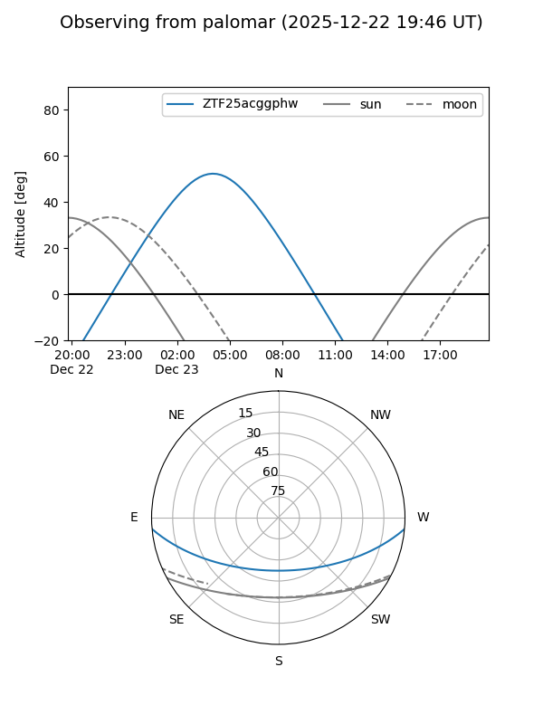
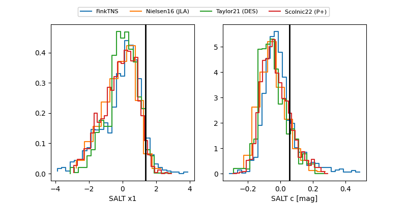

ZTF25acggphw
Target ZTF25acggphw at 2025-12-22 15:06
Aliases and brokers:
FINK: fink-portal.org/ZTF25acggphw
Lasair: lasair-ztf.lsst.ac.uk/objects/ZTF25acggphw
ALeRCE: alerce.online/object/ZTF25acggphw
alt names
ZTF25acggphw (ztf,fink_ztf)
Coordinates:
equatorial (ra, dec) = 35.4555,-4.43254
equatorial (HMS+DMS) = 02:21:49.32,-04:25:57.13
galactic (l, b) = (170.4393,-58.69937)
Flags:
Photometry:
last ztfg=20.04, ztfr=20.33
1 ztfg, 3 ztfr detections
Lightcurve

Visibility


Additional plots
